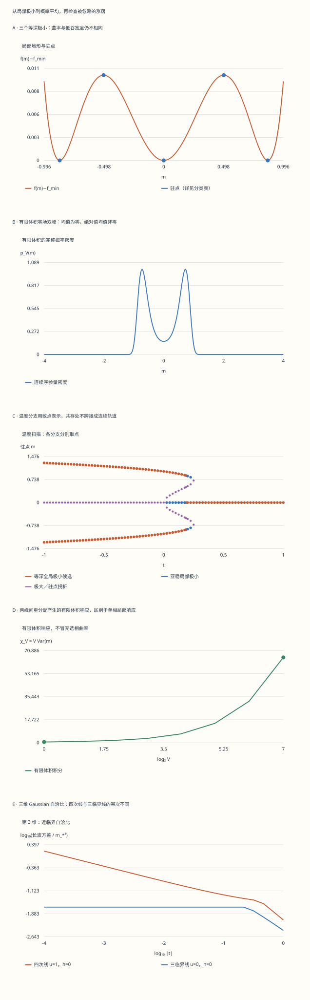

本页目录
统计进阶 I · 相变、有限体积与 Landau 理论
前置：统计系综与配分函数、导数与局部极值、Gaussian 积分。
本课目标：能区分驻点、稳定相、两相共存与失稳；从实际概率积分理解极限次序；用空间涨落检查平均场近似的适用范围。
1. 同一张双井图，为什么会有三个不同答案？
从“哪边更低”走到“体系怎样取平均”
想象一块很小的磁性样品，没有外场。模型给出左右两个等深低谷。你说“样品偏向其中一侧”，同伴说“平均磁化为零”，第三个人说“这里还没有严格相变”。三句话可以分别成立，因为它们谈的是选定的相、有限体系的系综平均，以及热力学极限的非解析性。
本课先计算一个连续序参量的自由能地形，再对全部可能的序参量取值积分。最后才允许序参量随空间变化。每一步新增了什么自由度，就相应新增什么结论；不能只凭双井形状跳过中间的推理。
先保留三个预测：双井出现是否就是共存？零场双峰是否必有非零均值？曲率为零是否就是不稳定？实验中的答案可以分别核对，完整解答在第 12 节。
2. 最小模型：对称性允许什么，稳定性要求什么？
取无量纲自由能密度与统计权重
这里取 \(k_BT=1\)。\(m\) 是无界连续的现象学序参量，不是必须位于 \([-1,1]\) 的单格点 Ising 自旋；\(V\) 是这个积分的大参数，也不直接等于实验样品的原子数。实验始终保留 \(v>0\)，所以任意所选 \(t,u,h\) 下积分都可归一化。四次模型会作为明确标注的近临界对照出现。
零场的 \(m\mapsto-m\) 对称性排除了奇次项；外场通过 \(-hm\) 倾斜地形。二次系数 \(t\) 可在临界附近与温差成正比，四次系数 \(u\) 决定连续线还是一阶线附近的结构，六次系数 \(v\) 提供大 \(|m|\) 稳定性。对称性限制可能的表达式，系数和极小化才决定相图。
把这个多项式视为一套可独立定义的概率模型时，后面的有限积分是实际计算；把它用于某种材料时，系数需要由微观模型或数据确定，截断展开也需要适用范围。
3. 找全驻点，还要分清高阶稳定性
驻点方程为 \(f'(m)=tm+um^3+vm^5-h=0\)。曲率 \(r=f''(m)=t+3um^2+5vm^4\) 为正给出普通局部极小，为负给出普通局部极大。若 \(r=0\)，二阶判别法没有答案：要看 Taylor 展开中首个非零高阶项。
例如 \(t=u=h=0\) 时 \(f=vm^6/6\)，原点是六阶平坦极小；\(t=h=0,u>0\) 时是四阶平坦极小；\(t=h=0,u<0\) 时则是四阶平坦极大。若首个非零导数是奇数阶，驻点两侧的函数值一升一降，它是驻点拐折，并不是局部极小。
实验不只在屏幕宽度内试探根。五次多项式的 Cauchy 界给出所有实根都位于 \(|m|\le 1+\max(|u|,|t|,|h|)/v\)。再解 \(f''=0\)，把该区间分成 \(f'\) 单调的各段；有变号的区间二分求根，同时检查分割端点上的重根。零场还可直接令 \(y=m^2\)，解 \(vy^2+uy+t=0\)，只保留 \(y>0\)。
驻点表保留二至六阶导数、残差与相对自由能。程序使用明示的浮点容差，因此“等深全局候选”是数值判定；精确共存条件应由下一节的代数式证明。非常接近退化点时，不能把浮点分类误称为严格根证书。
4. 一阶转变：出现、等深和消失是三个条件
在 \(h=0,u<0\) 时，非零驻点满足 \(t+uy+vy^2=0\)。存在实的非零分支要求判别式 \(u^2-4vt\ge0\)，其边界是 \(t_{\rm sp}=u^2/(4v)\)。这只说明局部地形开始出现新的驻点。
要找它和中心相共存的温度，还必须令 \(f(m)=f(0)\)。把驻点关系 \(t=-uy-vy^2\) 代回自由能，得到 \(f=-uy^2/4-vy^3/3\)，于是
对 \(u=-1,v=1\)，从高温向下降：\(t=1/4\) 出现非零驻点；到 \(t=3/16\)，中心和两侧极小才等深；再到 \(t=0\)，中心局部稳定性丧失。处在 \(3/16<t<1/4\) 时，两侧局部极小比中心高，它们是亚稳态。
在 \(t=1/4,m=\pm1/\sqrt2\) 处，曲率为零而三阶导数非零，故为驻点拐折。共存点 \(m=0,\pm\sqrt3/2\) 的曲率则分别为 \(3/16,3/4,3/4\)，都为正。共存并不要求极小变平。
外场 \(h\ne0\) 会改变这些条件，实验仍可求全部驻点，但不会把上述零场公式当成非零外场的共存线。地形中的势垒也不自动给出寿命或滞回曲线；那些问题还需要噪声、动力学与扫场速率。
5. 连续线与三临界点：指数从哪一步来？
固定 \(u>0\)，令 \(t\to0^-\)。在小 \(m\) 区域，六次项相对四次项变小，非零解满足 \(m_*^2\simeq -t/u\)，所以平均场 \(\beta=1/2\)。由驻点方程对 \(h\) 求导，得到选定稳定分支的局部响应 \(\chi_{\rm loc}=1/f''(m_*)\)。四次近临界对照给出高温 \(\chi_+=1/t\)、低温选相 \(\chi_-=1/(2|t|)\)，两侧 \(\gamma=1\)，振幅不同。
临界等温线 \(t=0,u>0\) 的低场关系为 \(h\simeq um^3\)，所以 \(\delta=3\)。四次模型的平衡自由能在 \(t<0\) 为 \(-t^2/(4u)\)，在 \(t>0\) 为零；二阶导数有限跳变，常记 \(\alpha=0\)。这不代表自动存在对数发散。
再调到 \(u=0\)，六次项成为首个稳定非线性项：\(m_*^4=-t/v\)、\(h=vm^5\) 分别给出三临界平均场 \(\beta=1/4,\delta=5\)。低温曲率为 \(r=4|t|\)，仍有 \(\gamma=1\)；平衡自由能为 \(-|t|^{3/2}/(3\sqrt v)\)，对应 \(\alpha=1/2\) 的幂次。
这些是极小化近似的指数。增加空间涨落之后是否保持，必须继续检查。三临界点通常需要同时调节两个独立的相关参数；单独沿温度轴降温不会自动经过 \(t=u=0\)。
6. 有限体积：对全部序参量积分，别只挑一个低谷
对任意有限 \(V\)，零场权重是偶函数，因而 \(\langle m\rangle_V=0\)。双峰位置、\(\langle |m|\rangle_V\) 与 \(\langle m^2\rangle_V\) 仍可非零。对配分函数求导可直接得到
\(\chi_V\) 包含在不同低谷之间重新分配概率的效应；\(\chi_{\rm loc}\) 则描述一个选定低谷内部的局部响应。零场低温大体积双峰可以让 \(\chi_V\) 随 \(V\) 增长，即使每个低谷的曲率保持有限。把两种磁化率混写，会误判“临界发散”。
Binder 量 \(U_4\) 帮助描述分布形状：零均值 Gaussian 分布给零；对称的两个无限窄峰给 \(2/3\)。它不是“所有双峰都恰好 \(2/3\)”的规则，也不能凭这一个全局序参量积分宣称已经测出某个空间晶格模型的普适 Binder 交点。
实验对 \(Z_V\)、前四阶矩和绝对值矩一起积分，再改变 \(V\) 和 \(h\)。你可以同时看到均值保持零、绝对值均值增大以及响应变陡。由于 \(v>0\) 控制两端，在有限参数邻域内可以对积分求导；有限 \(V\) 的实参数热力学函数保持平滑。真正的非解析性来自极限，不能由一次有限扫描证明。
7. 先取哪个极限，会改变“自发”的含义
在有对称双井的参数区，若始终令 \(h=0\)，无论 \(V\) 多大都有 \(\langle m\rangle_V=0\)。若先固定一个很小的 \(h>0\)，再让 \(V\to\infty\)，概率集中在正的一侧；最后令 \(h\to0^+\)，可以留下正的 \(m_*\)。因此 \(\lim_{V\to\infty}\lim_{h\to0}\langle m\rangle_V=0\)，而有序区的 \(\lim_{h\to0^+}\lim_{V\to\infty}\langle m\rangle_V=m_*>0\)。
这一选择并没有破坏方程的零场对称性，而是选定了一个极限态。实验展示有限 \(V\) 的前兆和分支极小，不能以 \(V=128\) 冒充已经完成了无穷极限。
还可以问：等深的极小是否在大体积时等概率？若几个孤立极小的曲率 \(r_i>0\)，Laplace 近似给每个低谷的贡献 \(e^{-Vf_i}\sqrt{2\pi/(Vr_i)}\)。等深只消去了指数上的区别，局部宽度仍影响权重。对上一节的一阶共存例子，中心曲率是两侧的四分之一，因此三个低谷的渐近权重是 \(1/2,1/4,1/4\)，而非各 \(1/3\)。
8. 数值实验怎样避免漏掉窄峰？
直接在固定粗网格上积分，可能跨过大 \(V\) 的窄峰。实验先找全部驻点，把它们和 \(m=0\) 都用作分割点；再计算平移后的权重 \(w(m)=\exp[-V(f(m)-f_{\min})]\)，避免配分函数整体过大。自适应 Simpson 同时控制六个积分分量，完整记录叶区间、五点评估值、粗细结果和修正。
可计算范围取 \([-4,4]\)，但模型本身仍定义在整条实轴。在所允许的参数域内，两端之外自由能向外递增且凸。对任一侧 \(x=sR\)，令 \(a=s f'(sR)>0\)，其中 \(s=\pm1,R=4\)。由凸性与 \((R+y)^k\le R^k e^{ky/R}\)，有
表中分别保留两侧的对数尾界。浮点数下溢为零只表示小于数值表示范围，不是严格零尾概率。Simpson 的误差列是数值估计，尾不等式是解析推导；二者不能统称为严格区间误差证书。课程的独立核对用整条实轴上的另一套积分与多项式求根实现检验结果。
9. 从一个数到空间场：涨落开始有长度尺度
让 \(m\) 变成 \(m(\mathbf x)\)，加入梯度代价 \(\kappa|\nabla m|^2/2\)。这个项惩罚邻近区域突然改变序参量，也使不同相之间的界面具有有限宽度。固定或足够快衰减的边界条件下，对泛函变分得到 \(-\kappa\nabla^2m+f'(m)=0\)。
在选定的均匀稳定相 \(m_*\) 周围写 \(m=m_*+\delta m\)，保留二次项，Fourier 模的代价为 \((r+\kappa q^2)|\delta m_q|^2/2\)，其中 \(r=f''(m_*)>0\)。因此 Gaussian 响应谱是 \(1/(r+\kappa q^2)\)，关联长度尺度为 \(\xi=\sqrt{\kappa/r}\)。
实验在多相等深时明确选择最大 \(m\) 的全局极小候选来画这一谱；这并不等于有限体积平均值。在 \(r=0\) 的平坦点，二次近似本身失效，显示“不适用”，而不是画一条假的有限曲线。
四次模型在 \(t<0\) 有解析界面 \(m(x)=\sqrt{|t|/u}\tanh[x\sqrt{|t|/(2\kappa)}]\)，其宽度尺度为 \(\sqrt{2\kappa/|t|}\)。这只是省去六次项的对照解；不能将它原样当作实验中 \(v>0\) 模型的精确界面。
10. Ginzburg 判断：被忽略的涨落够小吗？
将一个相关长度内的长波涨落与 \(m_*^2\) 比较。为使问题可复核，本实验明确采用窗口 \(0\le q\le\min(\Lambda,\xi^{-1})\)，球面积因子 \(A_d=S_{d-1}/(2\pi)^d\)。换元 \(y=q\xi\) 后
它是一个明确窗口下的 Gaussian 自洽指标。\(G\ll1\) 支持“涨落比选相序参量小”的假设，\(G\) 增大则提示假设开始失效；窗口形状和系数会影响数值，所以 \(G=1\) 不是精确相界。实验只在零场、非零稳定序参量处定义这个比值。
四次连续线近临界时 \(r\sim|t|,m_*^2\sim|t|\)，故 \(G\sim|t|^{d/2-2}\)，上临界维数为 \(4\)。三临界线则有 \(m_*^2\sim|t|^{1/2}\)，故 \(G\sim|t|^{(d-3)/2}\)，上临界维数为 \(3\)。达到边界维数时，幂次为零并不保证所有修正都消失，还要考察边缘耦合的重整化和对数修正。
改变维数滑块只改变这部分连续 Gaussian 比较；它没有把前面的单序参量积分变成一、二、三维 Ising 晶格模拟。定量的低维临界指数、微观有限尺寸标度与非平衡动力学需要各自的模型，后续 Ising 与重整化群课程会继续处理。
11. 操作顺序与研究接口
先选“非零分支失稳点”，读驻点表中的三阶导数；再选“三个等深极小”，检查三个正曲率。接着在零场双井下比较“小体积宽分布”和“大体积双峰”，记录 \(\langle m\rangle,\langle |m|\rangle,\chi_V\)。最后选“三维近临界涨落”，将维数切到 4 和 5，观察两条临界线自洽比的斜率怎样变化。
每个预设都提供六幅可切换图、十组完整数据表和当前记录下载。温度分支采用散点，避免把共存处的跳变画成连续轨道；各向量积分分量与尾界也能追溯。
这条链条连接到三类进一步问题：从有限尺寸分布估计热力学行为；从局部自由能构造空间场论；用重整化群判断耦合的相关性与三临界结构。课程给出这些问题的可计算入口，尚未执行晶格抽样、核化动力学或实验数据拟合。
参考读法。Tong 的统计场论第 1 章解释从微观自旋到有效自由能及空间场的层次；统计物理第 5 章可用于对照相变与系综语言。本课的六次多项式、有限体积积分、尾界和明确动量窗口均按本文约定推导，不能把不同系数约定直接混用。
无脚本对照：五图与六组记录使用同一份固定数据。前四图是连续序参量模型，第五图是明确动量窗口下的 Gaussian 自洽比较。

| 预设 | 均值 | 绝对值均值 | 有限χ | Binder U₄ | 选相Gaussian ξ |
|---|---|---|---|---|---|
| broken | 0 | 0.611178869 | 6.7935688 | 0.550892745 | 0.681897636 |
| critical | 0 | 0.321114413 | 2.31220821 | 0.292759588 | 不适用 |
| tricritical | 0 | 0.408695732 | 3.67398589 | 0.333333333 | 不适用 |
| coexistence | 0 | 0.560820411 | 6.80321909 | 0.385318596 | 1.15470054 |
| tilted | 0.693137034 | 0.71974296 | 1.16547601 | 0.603028265 | 0.570355208 |
| near-critical | 0 | 0.321138234 | 2.31250809 | 0.292792521 | 70.7071436 |
下载六组完整记录（约25 MB JSON）。包含全部驻点、积分叶区间、尾界、体积/外场扫描与Gaussian维数比较。浮点下溢不是严格零；积分误差为估计。
12. 练习：先算一个例子，再改变条件
1. 四次近临界模型两侧的响应为什么相差 2？
此题明确取 \(v=0,u>0,h=0\)。高温 \(m_*=0\)，曲率 \(t\)，所以 \(\chi_+=1/t\)。低温 \(m_*^2=-t/u\)，曲率 \(t+3um_*^2=-2t=2|t|\)，所以 \(\chi_-=1/(2|t|)\)。指数同为 1，振幅比为 2。低温答案是选定分支的局部响应，不是对称有限体积双峰的总响应。
2. 求 u=−1、v=1、h=0 的共存根及曲率。
联立驻点与等深关系得到 \(t=3/16\)，非零极小 \(m=\pm\sqrt3/2\)，中心 \(m=0\)。驻点方程还给出 \(m=\pm1/2\)，它们是分隔低谷的极大。曲率依次为中心 \(3/16\)、两侧极小 \(3/4\)、两个极大 \(-1/4\)。共存条件仅比较极小自由能，不能把五个驻点全当作五个相。
3. 三种曲率为零的原点分别是什么？
取 \(t=h=0,v=1\)。若 \(u=1\)，首项是 \(m^4/4>0\)，原点为四阶平坦极小；若 \(u=0\)，首项是 \(m^6/6>0\)，是六阶平坦极小；若 \(u=-1\)，附近由 \(-m^4/4\) 主导，是四阶平坦极大。二阶导数在三种情形里都为零，却不能给出同一个稳定性标签。
4. 纯三临界有限积分的矩能精确算吗？
令 \(t=u=h=0\)，记 \(a=Vv/6\)。换元 \(z=am^6\) 给出 \(Z_V=\Gamma(1/6)/(3a^{1/6})\)，以及 \(\langle m^{2k}\rangle=a^{-k/3}\Gamma((2k+1)/6)/\Gamma(1/6)\)。奇数阶矩严格为零。
由 \(\Gamma(1/6)\Gamma(5/6)=2\pi\)、\(\Gamma(1/2)^2=\pi\)，可得 \(\langle m^4\rangle/\langle m^2\rangle^2=2\)，所以 \(U_4=1/3\)，与 \(V,v\) 无关。这个精确值属于纯六次的全局序参量积分，不能转称为所有三临界空间模型的普适数值。
5. 等深共存时三个低谷的渐近概率各是多少？
沿用第 2 题，曲率为 \(3/16,3/4,3/4\)。Laplace 权重正比于曲率平方根的倒数，即 \(4/\sqrt3,2/\sqrt3,2/\sqrt3\)。归一化后中心占 \(1/2\)，左右各 \(1/4\)。
因此大体积极限下 \(\langle m\rangle=0\)、\(\langle m^2\rangle\to3/8\)、\(\langle m^4\rangle\to9/32\)，给出 \(U_4\to1/3\)、\(\chi_V/V\to3/8\)。有限体积时还有峰宽和高阶修正；本题是渐近结果。
6. 三维 Gaussian 长波积分在 r=κ=Λ=1 时是多少？
此时 \(\xi=1\)、窗口上限 \(q=1\)、\(A_3=1/(2\pi^2)\)。积分为 \(\sigma_{\rm long}^2=(2\pi^2)^{-1}\int_0^1 q^2/(1+q^2)\,dq=(1-\pi/4)/(2\pi^2)\)。将被积式写成 \(1-1/(1+q^2)\) 即可求出。这个问题只给定 Gaussian 系数；若要再求 \(G\)，还必须指定所选相的非零 \(m_*\)。
7. 为什么四次与三临界的上临界维数不同？
两种情形都有 \(r\sim|t|\)，长波方差都按 \(|t|^{d/2-1}\) 缩放。区别来自分母：四次线 \(m_*^2\sim|t|\)，三临界线 \(m_*^2\sim|t|^{1/2}\)。分别相除后，令幂次为零，得到 \(d=4\) 与 \(d=3\)。幂次分析只能给自洽边界与相关性线索，不能算出边界维数的对数修正系数。
8. “χ_loc 有限，因此没有任何大响应”错在哪里？
取零场有序区，左右窄峰位于 \(\pm m_*\)。每个峰内的曲率有限，使局部 \(\chi_{\rm loc}\) 有限；但整个对称分布的 \(\langle m^2\rangle\simeq m_*^2\)、均值为零，所以 \(\chi_V\simeq V m_*^2\)。小外场可通过改变两个峰的相对权重产生很大的响应。必须先说明是在一个相内求导，还是对允许两相重新分配的有限系综求导。